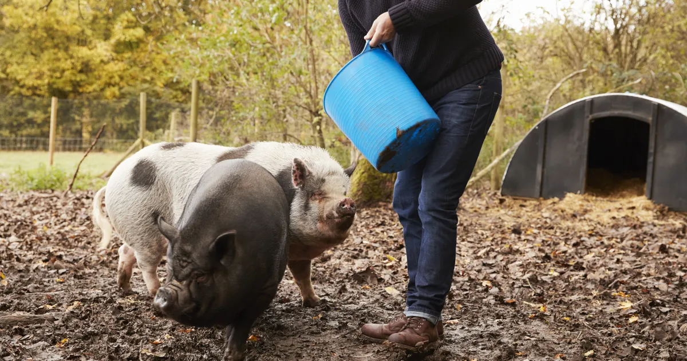
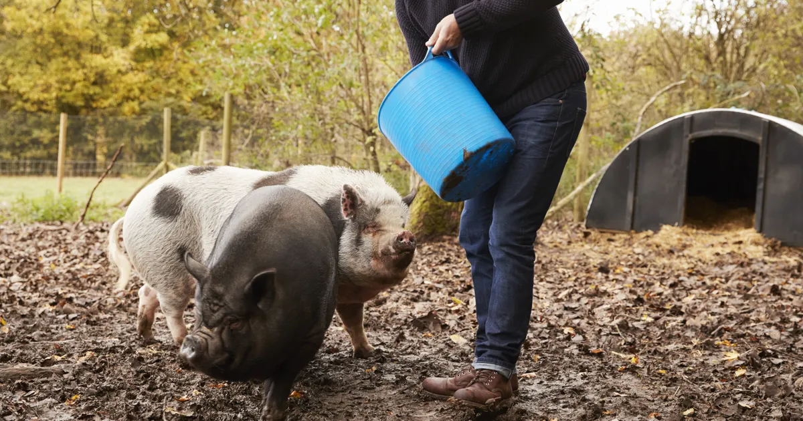

Hi I'm gel I would like you to know my Daily routine eyday, first I woke up at 6:00 o'clock in the morning to prepare for our business which is sari sari store, and then I eat my break fast and also make a cup of coffee for myself and then I'm incharge to guard our business so in the one to care of our business, and then in the afternoon I'm also feed our pigs and also buy some things and ware for our sari sari store. and when I have a vacant time I am doing my homework or activity, by afternoon I am going my daily workouts for 1 hour and then take a bath after that we was going to eat our dinner after that i was going to sleep at 10:00 o'clock.